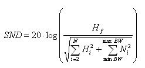

Signal to Noise plus Distortion (SND)
Signal to Noise plus Distortion is the ratio of the rms value of the fundamental of the output signal to the rms sum of all other spectral components below Nyquist frequency, including everything but DC.

minBW and maxBW define the frequency range of the FFT results that is passed to the distortion calculation.
Hf is the fundamental of the output signal.
n is the number of harmonics.
Hi (i=2...N) are the harmonics of the output signal.
Ni (Noise) are the spectral components excluding harmonics.